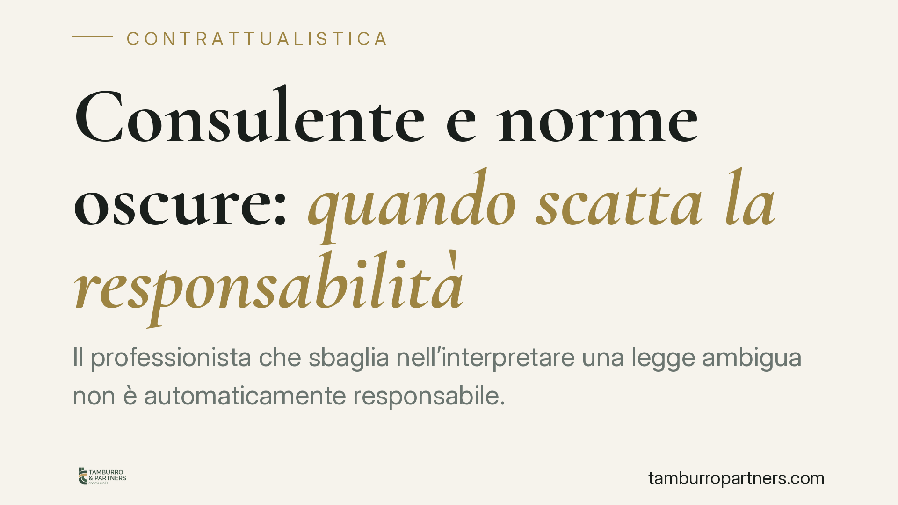

Consulente e norme oscure: quando scatta la responsabilità
Il professionista che sbaglia nell'interpretare una legge ambigua non è automaticamente responsabile. L'articolo 2236 del codice civile e la giurisprudenza della Cassazione circoscrivono la sua responsabilità ai casi di dolo o colpa grave quando la prestazione implica la soluzione di problemi tecnici di speciale difficoltà. Un principio che tutela consulenti, ma non li esonera da ogni obbligo di diligenza.

Il fatto e perché conta
Un consulente del lavoro, un commercialista o un avvocato che interpretano male una norma dal contenuto incerto commettono sempre un inadempimento? La risposta non è scontata. Quando il testo di legge è oscuro, contraddittorio o oggetto di orientamenti giurisprudenziali contrastanti, il metro di giudizio sulla condotta del professionista cambia.
La questione tocca chiunque affidi a un consulente una prestazione intellettuale: dal calcolo contributivo verso l'Inps alla redazione di un atto notarile, dalla difesa in giudizio alla pianificazione fiscale. Capire dove finisce l'errore scusabile e dove inizia la responsabilità è essenziale sia per chi fornisce la consulenza sia per chi la riceve.
Inquadramento normativo
Il riferimento centrale è l'art. 2236 del codice civile, secondo cui, quando la prestazione professionale implica la soluzione di problemi tecnici di speciale difficoltà, il prestatore d'opera non risponde dei danni se non in caso di dolo o colpa grave.
La norma introduce un regime attenuato di responsabilità. In condizioni ordinarie il professionista risponde anche per colpa lieve, cioè per una disattenzione modesta rispetto allo standard di diligenza qualificata richiesto dall'art. 1176, secondo comma, cod. civ. Ma di fronte a un problema di "speciale difficoltà" la soglia si alza: risponde solo se ha agito con malafede (dolo) o con una negligenza macroscopica, evidente, inescusabile (colpa grave).
La Corte di Cassazione ha chiarito che tra i problemi di speciale difficoltà rientra anche l'interpretazione di norme dal significato oscuro, di formulazione ambigua, oppure oggetto di orientamenti giurisprudenziali divergenti e non consolidati. In questi casi l'errore interpretativo del professionista, se ragionevole e sorretto da un percorso logico difendibile, non integra colpa grave e non genera responsabilità.
Attenzione però al perimetro. Il regime dell'art. 2236 c.c. riguarda l'imperizia, cioè l'errore tecnico. Non copre invece la negligenza e l'imprudenza: la mancata consultazione delle fonti, il ritardo, l'omesso aggiornamento professionale restano valutati secondo il criterio ordinario, anche in presenza di norme difficili.
Implicazioni pratiche
Per il consulente, il principio non è un salvacondotto. La "speciale difficoltà" va dimostrata caso per caso e non si presume: un problema è tale solo se la norma è oggettivamente equivoca o priva di indirizzi affidabili. Un errore su una disposizione chiara resta pienamente rimproverabile.
Inoltre, chi si avvale del regime attenuato deve poter dimostrare di aver comunque studiato la questione con serietà. La scusabilità dell'errore presuppone diligenza nel percorso, non superficialità nel risultato. Un consulente che non consulta la giurisprudenza rilevante o che ignora un orientamento pacifico non potrà invocare l'oscurità della norma.
Per il cliente, la conseguenza è che non ogni esito sfavorevole equivale a un errore risarcibile. Se il danno deriva da un'interpretazione poi smentita, ma all'epoca sostenibile, la pretesa risarcitoria rischia di non trovare accoglimento. Occorre distinguere l'errore inescusabile dalla scelta professionale legittima rivelatasi meno vantaggiosa.
Sul piano probatorio, il cliente che agisce per il risarcimento deve allegare l'inadempimento; spetta poi al professionista provare che la difficoltà tecnica era tale da giustificare la limitazione di responsabilità.
Cosa fare in concreto
- Documentate il percorso interpretativo. Consigliamo di conservare traccia scritta delle fonti consultate, degli orientamenti valutati e delle ragioni della scelta adottata: è la prova migliore della diligenza impiegata.
- Segnalate al cliente l'incertezza. Quando la norma è oscura, mettete per iscritto i margini di rischio e le interpretazioni alternative. La trasparenza riduce il contenzioso e circoscrive la responsabilità.
- Aggiornate costantemente le fonti. L'esenzione riguarda l'imperizia su questioni difficili, non l'omesso aggiornamento: verificate sempre la giurisprudenza più recente.
- Distinguete perizia e diligenza. Non confondete la difficoltà tecnica con la trascuratezza operativa: scadenze, adempimenti e controlli restano soggetti al criterio ordinario.
- Valutate la copertura assicurativa. Verificate che la polizza professionale copra anche le ipotesi di errore interpretativo, per proteggere sia voi sia il cliente.
*Contributo informativo a cura di Tamburro & Partners - Avv. Giuseppe Tamburro. Non costituisce parere legale.*
Ogni contratto ha il suo equilibrio.
Se vuoi una revisione delle clausole o una redazione su misura, scrivi allo studio. Ti rispondiamo entro un giorno lavorativo.